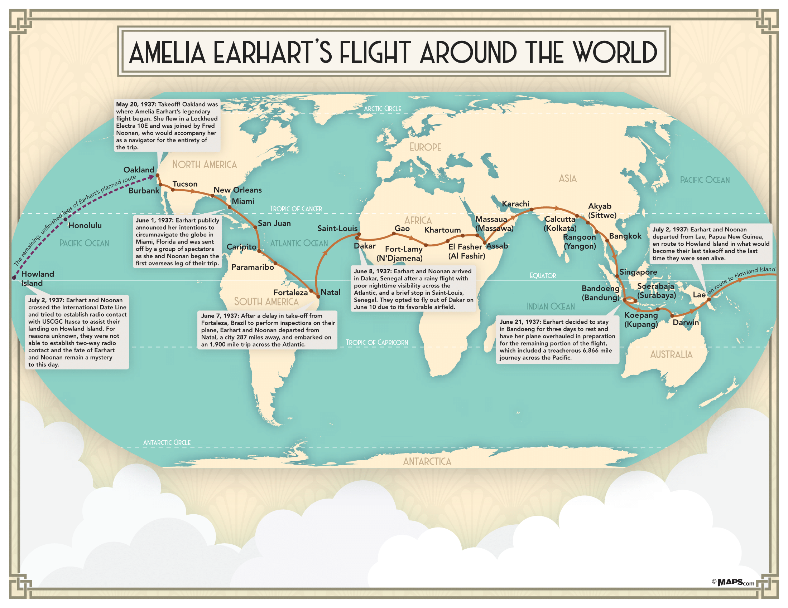
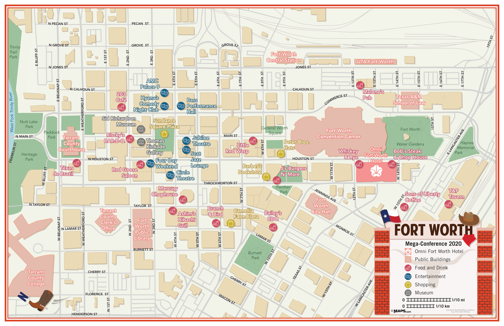
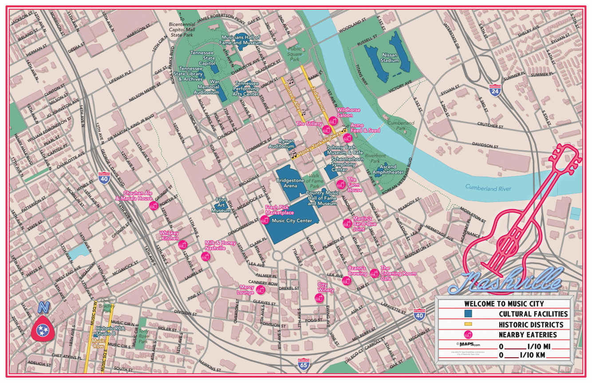
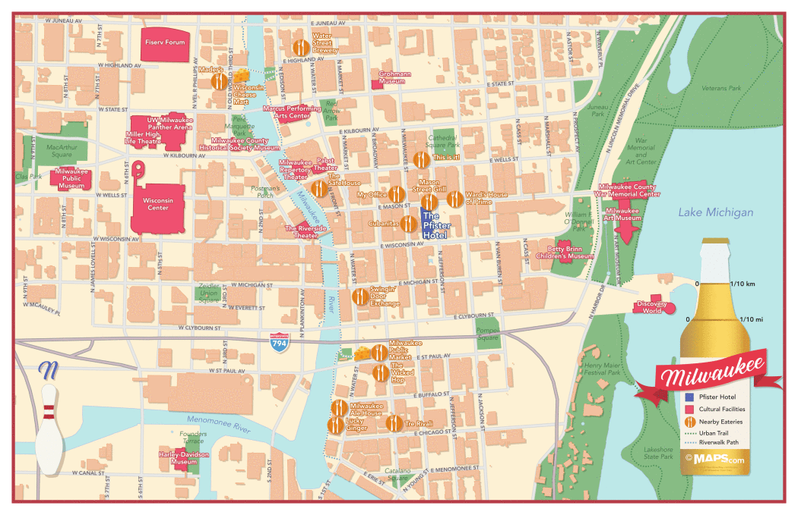
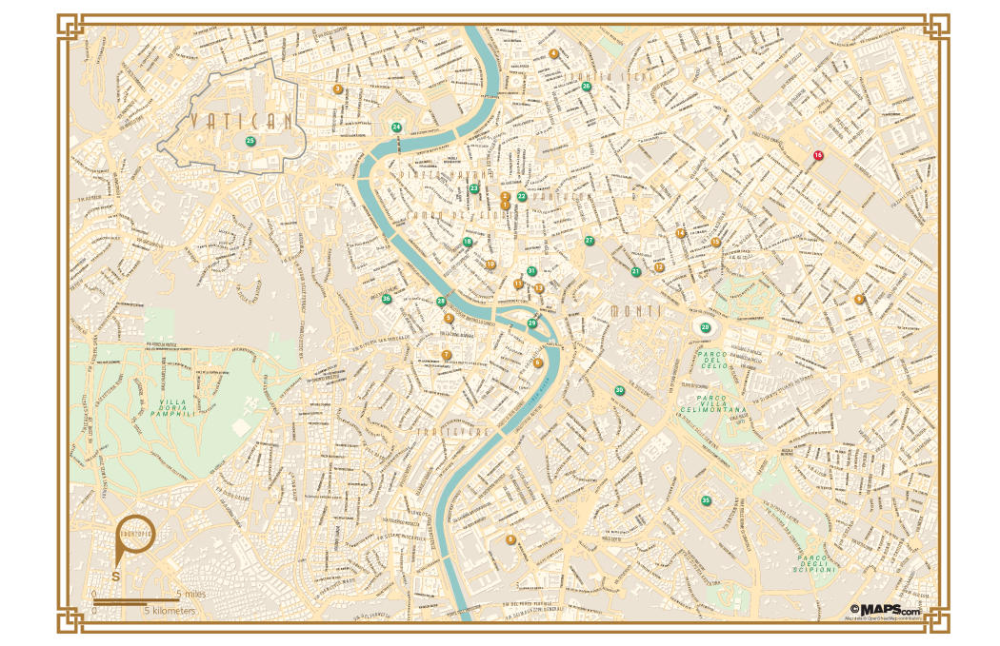
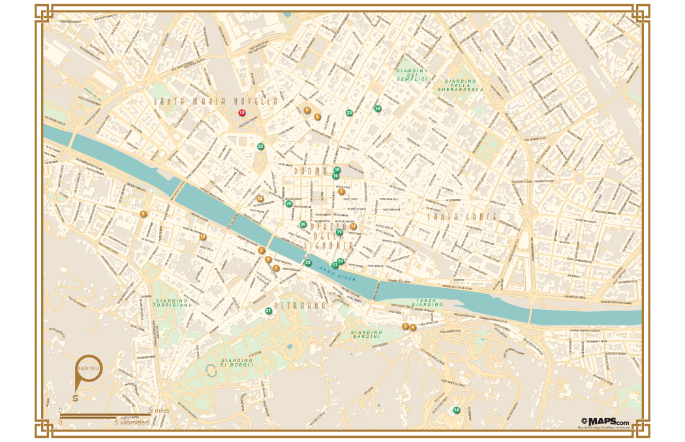
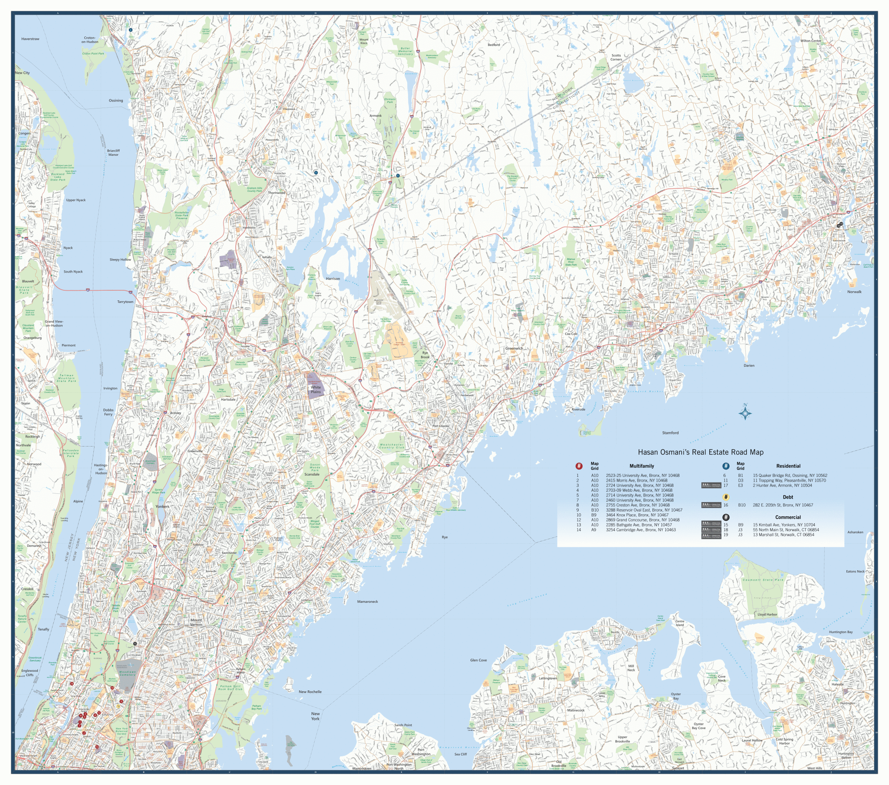
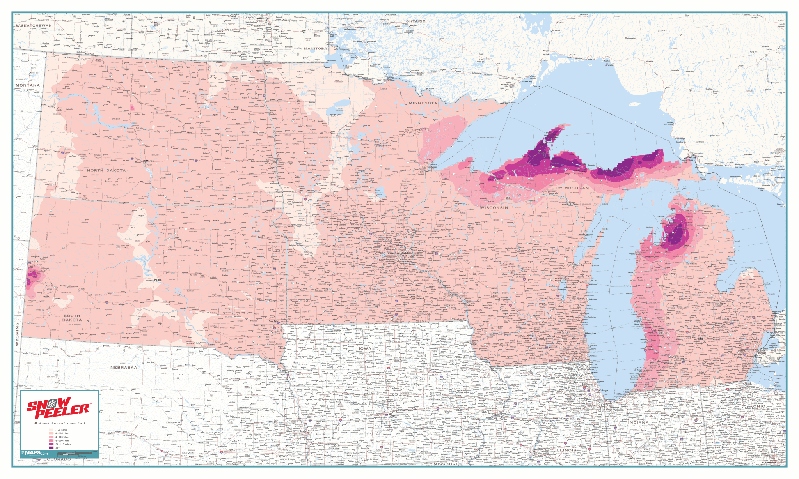

Hi, my name is Chris and I like to make maps, graphics, and friends of course. In the past, I worked as a Cartographer at Maps.com and as a Graphic Artist at UCSB. If you're a Zelda fan like me, I'd like to invite you for a stroll through memory lane with the Interactive Ocarina.
Want to get in touch? You can reach out to me by e-mail at: cartochien (at) gmail (dot) com
Vector illustrations of iconic buildings and bridges in Taipei
Interactive Ocarina made in Javascript with hidden easter eggs that give a nod to the game that inspired it…Read about the design process or play it here

A map commemorating Amelia Earhart’s legendary flight around the world for Maps.com's
International Map Day campaign

Walking guide map for the 2020 MEGA Conference in Fort Worth, Texas

Walking guide map for the 2019 LION Publishers Summit in Nashville, Tennessee

Walking guide map for the 2019 NNA Convention in Milwaukee, Wisconsin

Back side of the trifold tourist guide of Rome made for the travel app Prontopia

Back side of the trifold tourist guide of Florence made for the travel app Prontopia

Large real estate wall map of the outer suburbs of New York City for a custom maps client

Large wall map of annual snowfall in select midwestern states for North American roof rake company, PolarMade
Prototype web app for a client that allows them to upload a photo and generate a web map showing the location where the photo was taken. Try out the prototype here
19th century style map of Taiwan
19th century style map of Taiwan in monochromatic color palette
Simple, grayscale map of the Wari Sites in Peru for a paper by PhD Student Matt Biwer on food-related practices and agricultural production